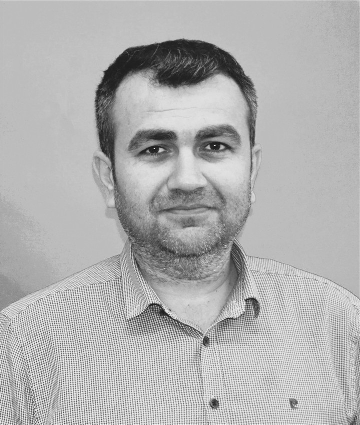
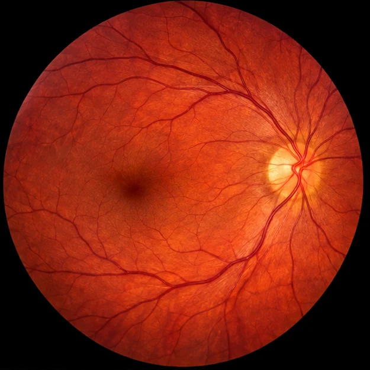
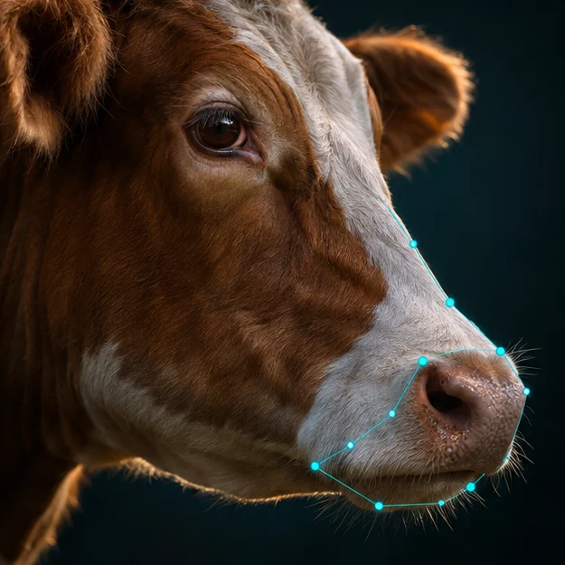
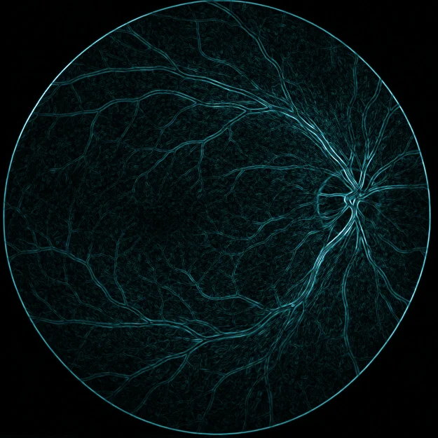

BİLGİSAYAR MÜHENDİSLİĞİ
Ahmet Saygılı
Tıbbi görüntü işleme, derin öğrenme ve hayvan biyometrisi üzerine çalışıyorum. MR, retina ve histopatoloji görüntülerini analiz eden bilgisayar destekli tanı yöntemleri geliştiriyorum.

Tekirdağ Namık Kemal Üniversitesi
Çorlu Mühendislik Fakültesi
Google Scholar 19 Ekim 2026
- Atıf
- 672
- h-indeks
- 13
- i10-indeks
- 17
Araştırma atlası.

Tıbbi Görüntü İşleme
Histopatoloji, dermatoloji, MRI ve akciğer görüntülerinin derin öğrenme ile analizi. COVID-19, kalp krizi ve maymun çiçeği gibi hastalıklarda bilgisayar destekli tanı sistemleri.
Derin Öğrenme
CNN, EfficientNet, ViT, Swin Transformer, DenseNet ve ConvNeXt mimarileri. ArcFace tabanlı metrik öğrenme, Grad-CAM ile yorumlanabilir yapay zeka (XAI) uygulamaları.
Tarım & Hayvancılıkta Görüntü İşleme
Büyükbaş hayvanların retinal damar desenleri, burun ve yüz görüntüleri ile biyometrik kimlik doğrulama. CattNIS ile özellik eşleştirme, CattleFaceMuzzle ile ArcFace metrik öğrenme ve Grad-CAM yorumlanabilirliği.
Veri Madenciliği & Makine Öğrenmesi
Kümeleme algoritmaları, özellik çıkarımı ve makine öğrenmesi yöntemleriyle eğitim başarısı analizi, hastalık tahmini ve bitki yaprağı hastalık tespiti uygulamaları.
ÖNE ÇIKAN ARAŞTIRMA
Retina görüntülerinden hastalık sınıflandırma.
Retina görüntülerini sınıflandıran beş derin öğrenme modelini doğruluk, eğitim süresi, bellek kullanımı ve enerji tüketimi açısından karşılaştırdık.
Açık kaynak ve uygulamalar.

CattleFaceMuzzle
ArcFace tabanlı metrik öğrenme ve Grad-CAM görsel yorumlanabilirlik ile açıklanabilir büyükbaş hayvan kimlik doğrulama. Ollama (Qwen3-VL) çevrimdışı görsel-dil açıklamaları, Streamlit arayüzü.
CattNIS
Büyükbaş hayvanların retinal görüntüleri ile yeni nesil biyometrik kimlik doğrulama sistemi. Damar ağı analizi ile bireysel tanıma (Novel Identification System).

Retina Sınıflandırma
Retinal görüntü sınıflandırması için derin öğrenme modelleri. Göz hastalıklarının erken tespitine yönelik transfer öğrenme tabanlı sınıflandırma sistemi.
Yaprak Hastalık Tespiti
Limon, mango ve nar yapraklarını sağlıklı/hasta olarak sınıflandıran derin özellik çıkarım sistemi. ImageNet ön-eğitimli modellerle yüksek doğruluklu tarımsal hastalık tespiti.
COVID-19 Tespiti
BT ve X-ray görüntülerinden makine öğrenmesi ile COVID-19 tespiti. Gaussian Mixture Model ve Kernel SVM sınıflandırıcısı kullanan bilgisayar destekli tanı sistemi.
NKÜ Atama Hesaplama
Tekirdağ Namık Kemal Üniversitesi'nin güncel atama ve yükseltme kriterlerine göre akademik puan hesaplama aracı. Dr. Öğretim Üyesi, Doçent ve Profesör kadroları için otomatik puanlama.
Platelet OBB Analyzer
Karbon fiber platelet kompozitlerde YOLOv8-OBB ile otomatik tespit ve oryantasyon analizi. Döndürülmüş sınırlayıcı kutular, istatistiksel düzgünlük testleri ve PyQt5 arayüzü.
BISTBot
Borsa İstanbul hisse senedi analiz ve takip uygulaması. Lightweight Charts ile mum grafiği, teknik göstergeler ve gerçek zamanlı veri akışı. Python backend ile birlikte çalışır.
Akademik Teşvik
Akademik teşvik ödeneği hesaplama ve takip uygulaması. Flutter ile geliştirilen cross-platform uygulama; yayın, proje, atıf ve diğer akademik faaliyetlere göre teşvik puanı hesaplar.
Yayın arşivi.
Uluslararası Hakemli Dergiler 25 yayın
Ulusal Hakemli Dergiler 7 yayın
Kitap Bölümleri 2 yayın
Uluslararası Konferans Bildirileri 13 yayın
Ulusal Konferans Bildirileri 5 yayın
Araştırma Projeleri
Eğitim
Yazılarım
Henüz yazı eklenmedi.
İletişim
Araştırma iş birliği ve tez danışmanlığı için e-posta ile ulaşabilirsiniz.
asaygili@nku.edu.tr